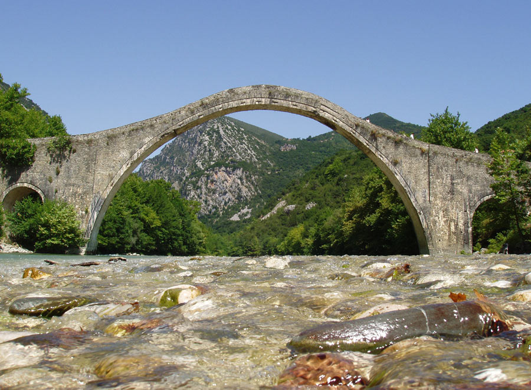

📍 Άρτα / Τζουμέρκα, Ήπειρος | 📍 Μήκος: ~110χλμ.
✨ Εντυπωσιακός ποταμός της Ηπείρου με καταγάλανα νερά, φαράγγια και το ιστορικό Γεφύρι της Πλάκας.
- 🚣♂️ Κορυφαίος προορισμός για Rafting, Καγιάκ και άλλες δραστηριότητες ποταμού.
- 🥾 Ιδανικός για Πεζοπορία, Εξερεύνηση και επαφή με τη φύση.
- 📸 Προσφέρει μοναδικές εικόνες με ποτάμια τοπία, δάση και πέτρινα γεφύρια.
- 🏛️ Φιλοξενεί το ιστορικό Γεφύρι της Πλάκας, το μεγαλύτερο μονότοξο πέτρινο γεφύρι των Βαλκανίων.